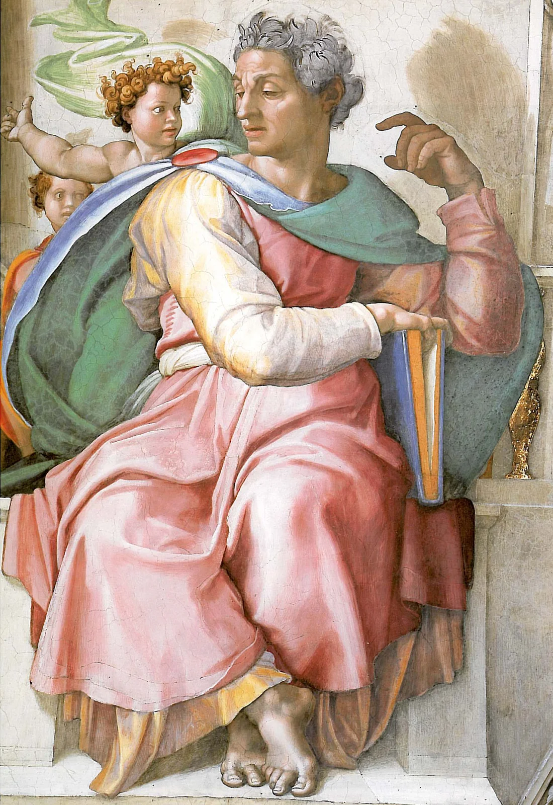
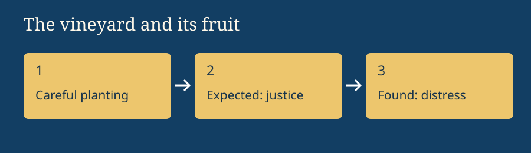
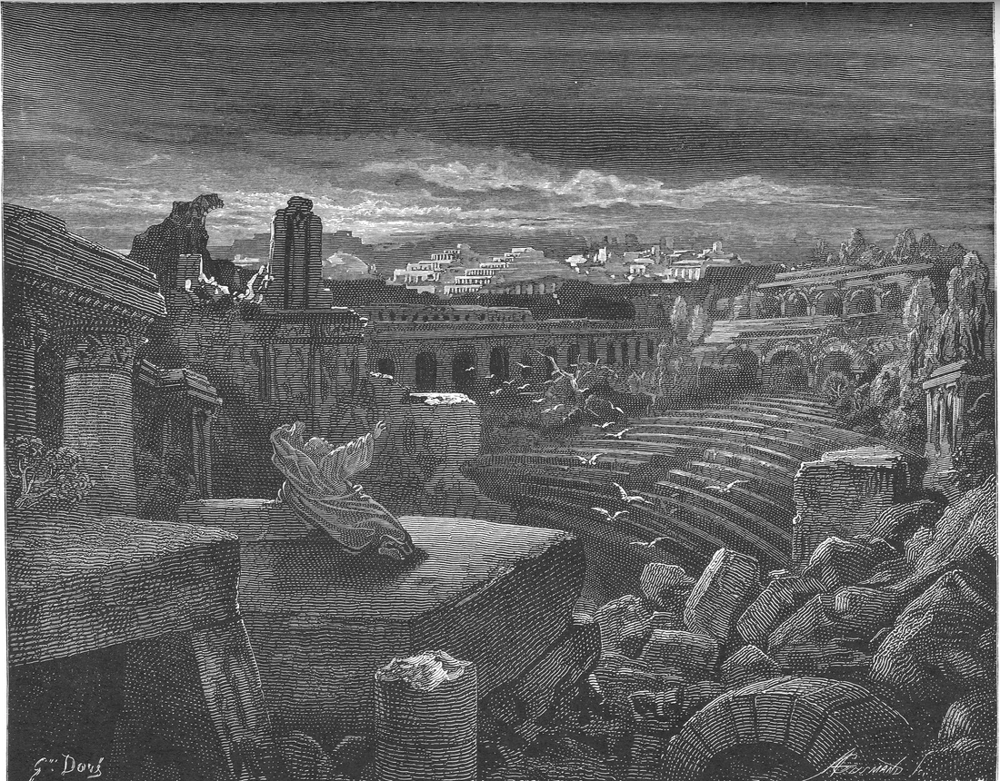
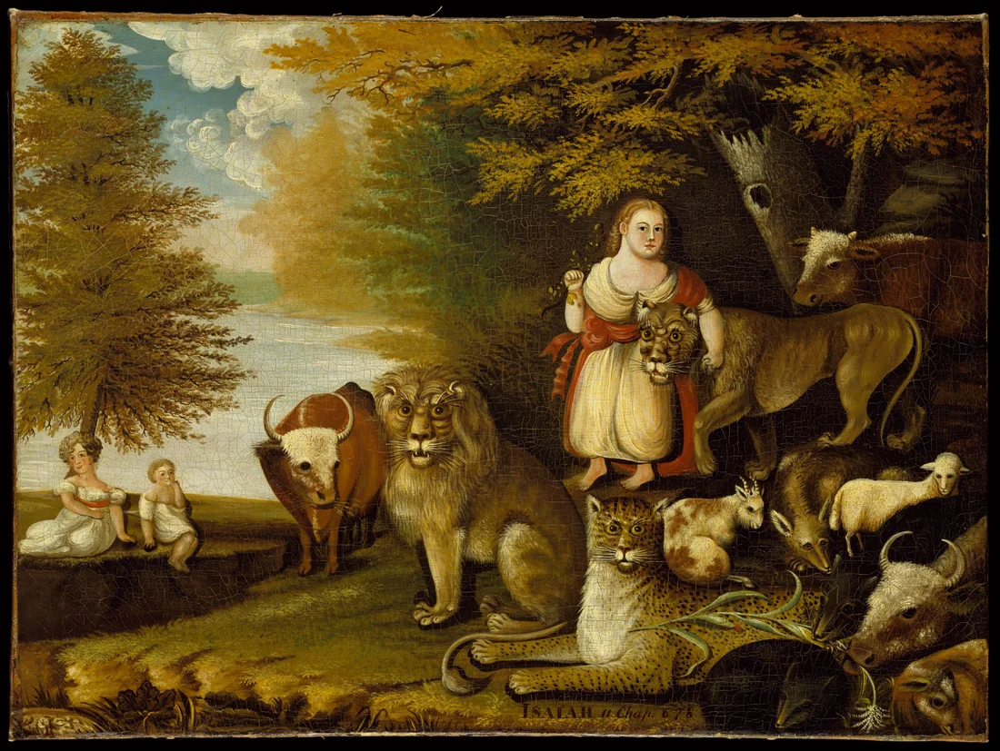

Israel, Covenant & Prophets · Grades 6–12 · 50–60 minutes
Isaiah
What does a holy God ask of an unjust society?
Isaiah speaks into Judah’s life under Assyrian pressure. The book moves from judgment toward comfort for exiles and the hope of renewed creation.
Begin the investigation →Where this book fits

.jpg){kind=link}
- Covenant
- Kingdom
- Prophetic warning
- Exile
- Restoration
Isaiah speaks into Judah’s life under Assyrian pressure. The book moves from judgment toward comfort for exiles and the hope of renewed creation. Before these events, Israel’s covenant calls for loyalty to God and care for neighbors. These books connect the failures of leaders and communities with judgment, grief, and the hope of restoration.
Today’s goals: trace the book’s movement; explain one image using its passage; distinguish the text’s claim from a later interpretation.
“Major” refers to the relative length of this group’s books, not a ranking of prophets’ importance. Christian Bibles commonly group Isaiah, Jeremiah, Lamentations, Ezekiel, and Daniel here. Jewish Bibles organize these books differently.
The vineyard investigation
A grower carefully tends a vineyard, but it produces bad fruit. Before reading Isaiah 5:1–7, predict what the vineyard represents.
Choose a prediction, then compare it with the passage.

Trace the whole book
Choose a section, read the linked passage in your Bible, and answer with a verse. Summaries are teaching paraphrases, not Scripture quotations.
Reading lenses and teacher context
Isaiah 1–39, 40–55, and 56–66 provide a useful reading map. Traditional readers emphasize Isaiah’s authorship; many scholars distinguish material associated with later exilic and postexilic settings. Christian readers connect servant and royal passages with Jesus; Jewish readings differ. Identify the reading lens and begin with the passage.
Look closely · Read with evidence
Judgment and hope in historical art
Read each passage before studying its illustration. Name one detail supported by the text and one choice made by the artist. These works show how later readers imagined Isaiah’s message.



Compare: How do the empty ruins and peaceful gathering convey different futures? Use one verse from Isaiah 13 and one from Isaiah 11 to explain.
Check your reading
Explain with evidence
Choose an image or action from this book. What does the passage show? What does it explain? What does your reading add? Include a verse reference and connect your explanation to the big question.
Notes save in this browser as you write.
Read and continue
USCCB: Isaiah introduction and reading notes · Kingdoms, Prophets & Exile
Teacher plan · 50–60 minutes
5 minutes: locate the book in the story. 10 minutes: predict, read, and compare. 20 minutes: assign reading sections to pairs and build a whole-book explanation. 10 minutes: check answers and discuss evidence. 10 minutes: write an explanation. For younger readers, use the first passage and explain the image orally. For extension, compare two translations and distinguish textual observations from interpretive claims. Let students discuss textual grief without requiring personal disclosures.